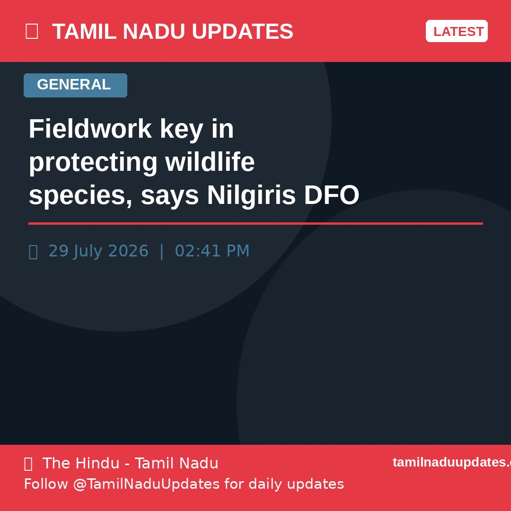

Fieldwork key in protecting wildlife species, says Nilgiris DFO
Asks students to learn from tribespeople who possess traditional knowledge of wildlife biology This is an important development for Tamil Nadu. Readers are encouraged to follow th...
Auto-curated updates, posted every morning & evening

Asks students to learn from tribespeople who possess traditional knowledge of wildlife biology This is an important development for Tamil Nadu. Readers are encouraged to follow th...
The former RBI Governor was delivering a special lecture commemorating the 35th anniversary of India’s New Economic Policy, organised by the PG and Research Department of Economics...
Justices N. Sathish Kumar and M. Jothiraman hold that legal heirs of a woman who had died before the 2005 Hindu Succession (Amendment) Act came into force cannot claim coparcenary ...
With regard to the extension of the Registrar’s service, the Syndicate based its decision on the performance assessment report of the Convenor of the Vice Chancellor Committee Thi...
The District Revenue Officers of Thanjavur and Tiruvarur have been appointed as Land Acquisition Officers in their respective districts; the project gets new life 14 years after it...
Litigant claims the department had lifted the ban on registration of those properties much to the disadvantage of four temples in Karur district This is an important development f...
MRC commemorates Kargil Vijay Diwas in Coonoor This is an important development for Tamil Nadu. Readers are encouraged to follow the source link for the complete story. Stay tune...
Chief Justice Sushrut Arvind Dharmadhikari and Justice G. Arul Murugan would be hearing on Monday the case filed by Karu Nagarajan of ‘We The Leaders’ movement This is an importan...
“The visit will serve no purpose other than enabling the government to claim that it made a direct effort by travelling to Karnataka for talks,” he said This is an important devel...
Special teams were formed to nab escaped suspects This is an important development for Tamil Nadu. Readers are encouraged to follow the source link for the complete story. Stay t...
Director-General of TECC Chennai explains his idea of ‘Design from Taiwan, Make in Tamil Nadu’ This is an important development for Tamil Nadu. Readers are encouraged to follow th...
Man held for using duplicate keys to allow devotees worship at Arunachaleswarar temple in Tiruvannamalai This is an important development for Tamil Nadu. Readers are encouraged to...
Considered Mr. Vijay’s swansong before his transition to full-time politics, Jana Nayagan, which was originally expected to be released ahead of the 2026 Assembly elections, hit th...
According to reports, after the makers implemented modifications suggested by the examining committee, the film was initially considered suitable for a 'U/A' certificate; however, ...
The scheme will henceforth be known as the Perunthalaivar Kamarajar Breakfast Scheme This is an important development for Tamil Nadu. Readers are encouraged to follow the source l...
For salt pan workers, the weather forms the basis of their livelihood: long, hot days take a toll on their body but allow them to earn, while spells of rain offer relief but mean w...
Four arrested in chain-snatching case in Cuddalore This is an important development for Tamil Nadu. Readers are encouraged to follow the source link for the complete story. Stay ...
Using criminal law to protect reputation of rulers is condemnable This is an important development for Tamil Nadu. Readers are encouraged to follow the source link for the complet...
The application portal for registration is likely to be opened in mid-August This is an important development for Tamil Nadu. Readers are encouraged to follow the source link for ...
In a post on X, the DMK’s deputy general secretary Kanimozhi Karunanidhi strongly condemned the TVK government’s action on the MLA and termed it “high-handed” This is an important...
Vijay congratulates National Film Award winners from Tamil movie industry This is an important development for Tamil Nadu. Readers are encouraged to follow the source link for the...
The first expansion of the city of Chennai in modern times happened along its southern stretch. As the government in its wisdom decided to locate the IT corridor in south Chennai, ...
Visitors will have the opportunity to experience the latest innovations in the fields through live demonstrations, conference sessions, exhibitor presentations, and dedicated netwo...
The petitioner, being a person of considerable standing in society, ought to have exercised greater restraint while making public statements, says Justice G.K. Ilanthiraiyan This ...
T.N. CM Vijay completes self-enumeration for Census, urges public to participate This is an important development for Tamil Nadu. Readers are encouraged to follow the source link ...
Rotary Club donates HBOT chamber to Omandurar Government Hospital This is an important development for Tamil Nadu. Readers are encouraged to follow the source link for the complet...
Law Minister Nirmalkumar slams Opposition over corruption and also alleged that the DMK, AIADMK and BJP are attempting to form a government together. This is an important developm...
Researchers call for routine urine testing to detect chronic kidney disease earlier, warning that delayed diagnosis is putting millions at risk of kidney failure and premature deat...
Cuddalore MP reviews development works at DISHA meeting This is an important development for Tamil Nadu. Readers are encouraged to follow the source link for the complete story. ...
TVS Emerald inks Joint Development Agreement for four-acre land parcel in Noombal This is an important development for Tamil Nadu. Readers are encouraged to follow the source link...
The Minister accuses the Opposition parties of linking him to individuals who had fraudulently registered 1.4 acres of land at the foothills of Palani belonging to the Dhandayuthap...
Gold was concealed inside the stitched waistline of trousers worn by the accused This is an important development for Tamil Nadu. Readers are encouraged to follow the source link ...
Speaking to reporters after submitting a petition to the Governor in Chennai, Mr. Bharathi said the DMK had already submitted a representation on July 4 This is an important devel...
Poomani received the Sahitya Akademi Award in 2014 for his monumental novel Agnaadi, an epic narrative set against the backdrop of the Sivakasi (1899) and Kazhugumalai (1895) commu...
It gave the direction on a petition filed by Ananya Dubey, who sought details of the grant-in-aid received by the institute in the previous three financial years, along with projec...
Janaki sang in Hindi and Sinhala too, but it was in the South Indian languages that she carved a niche. Her rendition was infused with love and pathos, and was often a hat-tip to b...
T.M. Krishna–PARI Award 2026 recognises seven young photojournalists This is an important development for Tamil Nadu. Readers are encouraged to follow the source link for the comp...
Roof of ancient Thiruvalangadu temple mandapam caves in This is an important development for Tamil Nadu. Readers are encouraged to follow the source link for the complete story. ...
Tamil Nadu seeks higher Krishna water flow from Andhra Pradesh to shore up Chennai reservoirs’ storage This is an important development for Tamil Nadu. Readers are encouraged to f...
Extensive security arrangements have been put in place across Karur for the Chief Minister's visit, with barricades, QR code-enabled entry passes for participants and heavy police ...
Mixed reaction from locals in public hearing held on Cuddalore port expansion This is an important development for Tamil Nadu. Readers are encouraged to follow the source link for...
The clarification came after The Hindu reported that many government schools across the State were yet to receive textbooks, particularly those for Classes IV and V This is an imp...
Justice G.K. Ilanthiraiyan directs both of them to appear before the investigating officer twice a day until further orders and cooperate with the investigation This is an importa...
Justice V. Lakshminarayanan orders notices on the election petitions filed by DMK’s R.D. Shekar and S. Inigo Irudayaraj who had lost in Perambur and Tiruchi East constituencies Th...
They are former Minister K.C. Veeramani, who represents Jolarpet, and S.M. Sukumar of Arcot. They were among the 25 dissidents who had supported the TVK at the time of the trust mo...
Mr. Nirmalkumar said so far, appointments have been made only in three districts This is an important development for Tamil Nadu. Readers are encouraged to follow the source link ...
The advanced system with Crash-Rated Electro-Hydraulic Road Blockers and Electro-Hydraulic Tyre Killers has been installed near the New Integrated Terminal Building This is an imp...
Several concerns were raised at the two-day public hearing organised by the Neithaliyal Collective in Ennore, where fishers and residents from Tiruvallur, Chennai, Chengalpattu, an...
Only five departments have hosted their G.O.s issued in May and June on the website. The orders that are not available on the site pertain to the creation of Singappen Special Forc...
A delegation from the DMK met Governor Rajendra Viswanath Arlekar and submitted a memorandum seeking action into allegations of ‘horse-trading’ by the ruling party and over the all...